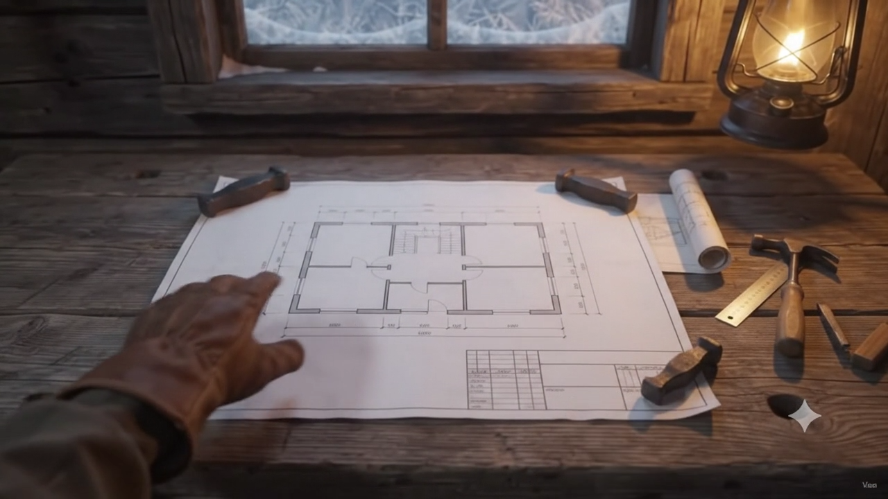
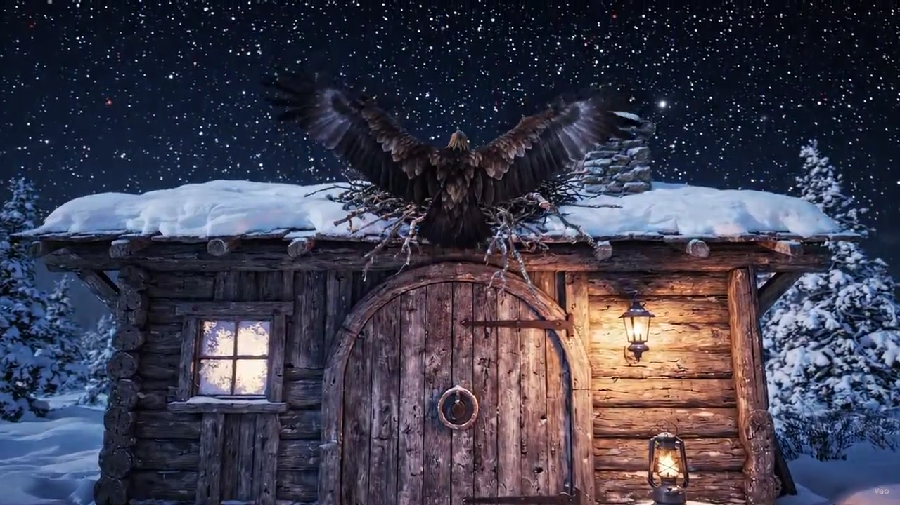

Go to House →
BIRD
P1
P2
P3
P4
P5
P6
P7
P8
P9
🏔️ TRAVEL TO MOUNTAINS →
🏠 TRAVEL TO HOME →
✦
Clubs
→
CLUB 1
CLUB 2
CLUB 3
CLUB 4
SCENE 14
The Clubs Showcase
— Four creative domains in synchronized viewport harmony
❄
A WINTER'S JOURNEY
AN INTERACTIVE CINEMATIC PORTFOLIO
🏔️ Mountains
🏠 Home
← Back to Peak
Clubs
← Back to Finale
↺ Replay
HQ
🔇
Sound
🚧 Future Projects
Chapters
CHRONICLE CHAPTERS
✕